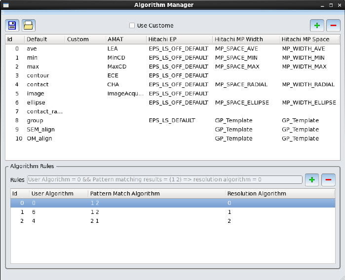

The Calibre Metrology Interface enables
you to define commands to resolve conflicts in algorithm identification
for sites with multiple possible pattern matching results. You can
define priority and preceding commands as well as visual classification
of sites with similar algorithm combinations for manual resolution
and verification of the solution.
Procedure
- In the
Job Configuration area, click the radio button at Site
Automatic Adjustment > Cluster Conflicts to
enable Cluster Conflicts mode.
By enabling this mode, CMi clusters sites with similar
algorithm combinations and the Algorithm field in the table are
highlighted by a unique color for each algorithm cluster. The Log
window also indicates what each color group means.
Figure 1. Sites
With Common Algorithms Clustered
If Cluster Conflicts is not
enabled, the algorithm conflicts are highlighted in yellow.
- You can
review the automatic conflict resolution settings for each cluster.
If you want to change how CMi will resolve conflicts for a cluster,
click on the Algorithm column to invoke the Algorithm Conflict Window
to specify a different algorithm. Click OK to apply
the change to the individual entry, or Apply All to
apply the change to the entire cluster.
- You can
customize algorithm behavior using the Algorithm Manager. In the
main CMi window, select Tools > Algorithms
Manager.
In the Algorithm Manager (see “Algorithm Manager” for complete information),
you can specify the algorithm combinations and which algorithm is
to be automatically assigned to a site in case of a conflict.
Figure 2. Algorithm
Manager Example
The Algorithm Manager contains two panes:
The Algorithm
table at the top of the Algorithm Manager lists the individual algorithms,
including IDs, default algorithm used, custom names, and AMAT and Hitachi
template information. From here, you can add, modify, or delete
individual algorithms.
The Algorithm
Rules section enables you to define different algorithm combinations (user
algorithms and algorithms found by pattern matching) and define
the user-required choice for those combinations. The Rules list
only accepts Algorithm ID numbers that are defined in the Algorithm
Manager.
After you make modifications, you can review the automatic resolution
results through the manual conflict resolution process again.